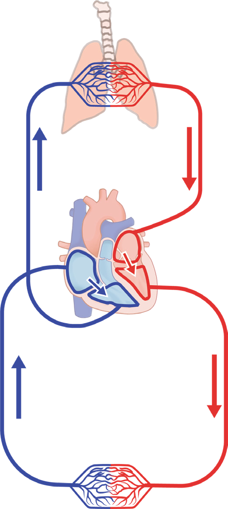

116
Student’s Book - Form Two
Biology for Secondary Schools
The left auricle then pumps the blood into the left ventricle. The left ventricle has strong muscles that pump blood to all parts of the body through the aorta.
After delivering the requrements to the tissues, the blood flows back to the heart through the vena cava. This movement of blood between the heart and various parts of the body is called the systemic cycle. Therefore, systemic circulation is the circulation of blood between the heart and all other parts of the body, except the lungs. Oxygenated blood from the left ventricle is pumped to various parts of the body through the
aorta. The deoxygenated blood from different parts of the body is brought into the right auricle through the vena cava.
Formation of tissue fluid
Tissue fluid is a kind of fluid formed from blood plasma by a diffusion and filtration process. This fluid occupies much of the intercellular spaces in the body and blood capillaries. They form a connecting link for transport of nutrients, gases and other materials between blood capillaries, tissues, and lymphatic vessels.

Capillaries in the lung
Pulmonary vein
Pulmonary circulation
Systemic circulation
Pulmonary artery
Left auricle
Vena cava
Left ventricle
Aorta
Capillaries in the body
Oxygenated blood
Deoxygenated blood
Figure 5.14: Double circulation in human beings
08/04/2026 10:18:32